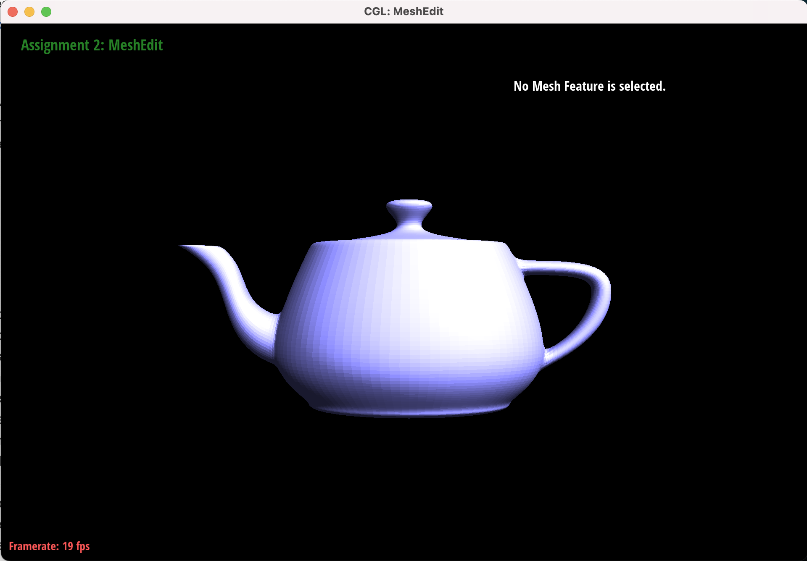

Overview
This Project helps me understand more of how to use linear interpolation to generate a smooth Bezier Curve and Bezier surfaces in 2 or 3 dimensions. Also the implementation of edge flip, edge split, and subdivision for mesh Upsampling really reinforce my understanding of those concepts , and the real life implementation gives me a taste of how does the 'magic' of those tricks can help to generate a better curve and smoother rendering. Lastly, the implementation of upsampling let me have a chacne to generate a more detailed graph. And the debugging experience I have for part 4, 5, and 6 by drawing out a graph to keep track of changes was my first time, so I also learned a new debugging trick.
Section I: Bezier Curves and Surfaces
Part 1: Bezier Curves with 1D de Casteljau Subdivision
Briefly explain de Casteljau's algorithm and how you implemented it in order to evaluate Bezier curves.
- De CasteLjau's algorithm is a recursive method for evaluating Bezier curves. It is based on the principle of linear interpolation and can be used to find any point along a Bezier curve. The algorithm works by repeatedly subdividing the control points until only one point remains, which is the point on the curve corresponding to the given parameter value.
- The way I implemented is following the procedure above, using linear interpolation to find total n-1 intermediate points, then return them.
Take a look at the provided .bzc files and create your own Bezier curve with 6 control points of your choosing. Use this Bezier curve for your screenshots below.
Show screenshots of each step / level of the evaluation from the original control points down to the final evaluated point. Press E to step through. Toggle C to show the completed Bezier curve as well.
|
|
|
|
|
|
Show a screenshot of a slightly different Bezier curve by moving the original control points around and modifying the parameter \(t\) via mouse scrolling.
Part 2: Bezier Surfaces with Separable 1D de Casteljau
Briefly explain how de Casteljau algorithm extends to Bezier surfaces and how you implemented it in order to evaluate Bezier surfaces.
The de Casteljau algorithm extends to Bezier surfaces by applying the algorithm (linear interpolation between points)
iteratively in either two (u, v directions) or three dimensions to compute a point on the surface.
First, the evaluateStep() calculates the intermediate points by linear interpolation given a vector
of points, this function is used to reduce a sequence of points down to a single point. Then the evaluate1D() uses the
evaluateStep() to evaluate the de Casteljau algorithm for a single dimension. And the evaluate() uses the evaluate1D() to
each row of control points using the u parameter, reducing the Bezier surface to a Bezier curve in the v direction. Then,
it applies evaluate1D on the resulting points with the v parameter to find the point on the surface.
Show a screenshot of bez/teapot.bez (not .dae) evaluated by your implementation.
Section II: Triangle Meshes and Half-Edge Data Structure
Part 3: Area-Weighted Vertex Normals
Briefly explain how you implemented the area-weighted vertex normals.I first calculated the normal vector for each face adjacent to a vertex, weighting it by the face's area, and then averaging these area-weighted normals to find the vertex normal.
Show screenshots of dae/teapot.dae (not .bez) comparing teapot shading with and without vertex normals. Use Q to toggle default flat shading and Phong shading.
|
|
|
Part 4: Edge Flip
Briefly explain how you implemented the edge flip operation and describe any interesting implementation / debugging tricks you have used.The way I flip these edges are by changing the orginial halfedgemesh to a new halfedgemesh, and we just do that by changing the (vertices , edges, faces, and the halfedges) neighbors to a new halfedgemesh, updating these four atomic element types. A debugging trick I used was to changing the variable name to just a halfedgemesh's components' name, ie. h4 becomes h1_1 as h1's next edge. I also drew graph to help me to trace the assignment of neighbors.
Show screenshots of the teapot before and after some edge flips.
|
|
|
Write about your eventful debugging journey, if you have experienced one.
I debugged by chasing each variable's relation among others, when I made a mistake on updaing h1_2_twin's neighbors, I drew a graph of what I did so far, what I have assigned for the new halfedgemesh, then I finally figured out where I got wrong, then fixed the bug.
Part 5: Edge Split
Briefly explain how you implemented the edge split operation and describe any interesting implementation / debugging tricks you have used.
The way I implemented the edge split operation is very similar to the previous part, but we created a new vertex in the middle, and we split two face into four faces, and created the new elements of those new halfedges,
then we just assign those new elements neighbors correspondingly, and we finish the split.
Also similar to the previous part, I drew out the graph to help me understand and keep track of the changes, this is the debugging trick I have.
Show screenshots of a mesh before and after some edge splits.

|
|
Show screenshots of a mesh before and after a combination of both edge splits and edge flips.
|
|
|
Write about your eventful debugging journey, if you have experienced one.
It's similar to part 4, I drew out the graph and keep track of changes of those elements, and the new created elements.
If you have implemented support for boundary edges, show screenshots of your implementation properly handling split operations on boundary edges.
Part 6: Loop Subdivision for Mesh Upsampling
Briefly explain how you implemented the loop subdivision and describe any interesting implementation / debugging tricks you have used.
I first computed the new positions for all the vertices (also the new edge midpoints) in the input mesh by the loop subdivision rule, stored them in the Vertex::newPosition (). Then, I computed the updated vertex positions associated with edges, and stored in Edge::newPosition.
Next, I split every edges and flipped the new edges that touch a new & old vertex. Finally, copy down the new vertex positions into the final Vertex::position.
I encountered a bug that's because I didn't set all the old edges to false before I processed them.
Take some notes, as well as some screenshots, of your observations on how meshes behave after loop subdivision. What happens to sharp corners and edges? Can you reduce this effect by pre-splitting some edges?
From the graphs below, we can observe that the loop subdivision more a smoother graph, by upsampling we divide the meshes into a smaller meshes, so we reduce the sharp corners and edges become smoother corners and edges. We may reduce this effect by pre-splitting some edges, but it will not significantly reduce the smoothing effect on sharp corners and edges in a loop division.
|
|
|
|

|
|
Load dae/cube.dae. Perform several iterations of loop subdivision on the cube. Notice that the cube becomes slightly asymmetric after repeated subdivisions. Can you pre-process the cube with edge flips and splits so that the cube subdivides symmetrically? Document these effects and explain why they occur. Also explain how your pre-processing helps alleviate the effects.
Before Pre-processing: The original cube with a simple topology show signs of becoming spherical and less symmetrical after several Loop subdivisions due to the algorithm's averaging process.
After Pre-processing: A pre-processed cube with uniformly split edges provides a higher density mesh. This higher resolution mesh maintains its structural features more effectively after subdivision, showing less rounding of corners and edges and maintaining greater symmetry.
Explanation of why these effects occur:
- Loop Subdivision Averaging: Loop subdivision smooths the mesh by averaging the positions of vertices based on their neighbors. This inherently rounds the mesh, affecting sharp edges and corners the most.
- Increased Vertex Density: By increasing the vertex density through edge splits, the averaging process has more points to consider, which can help in preserving the mesh's overall shape and symmetry through the subdivision process.
For edge splits: I split edges uniformly adds vertices in the middle of each edge. This increases the mesh's resolution and helps maintain more of the cube's structural integrity upon subdivision.
Process: Split each edge of the cube to introduce a new vertex at the midpoint, effectively dividing each face of the cube into four smaller faces.
Effect: Increases the density of vertices and edges uniformly, which helps maintain symmetry as the Loop subdivision algorithm has more vertices to "work" with, reducing the impact of averaging on the cube's overall shape.
The pre-processing alleviates the effects because first it provides uniformity: uniform edge splits ensure that each face of the cube is subdivided in a symmetrical manner, countering the rounding effect by providing a denser base mesh for subdivision. Second, it provides control over smoothing: a denser mesh gives the Loop subdivision process more vertices and edges to work with, allowing for a more controlled smoothing effect that better preserves the original structure's symmetry.
If you have implemented any extra credit extensions, explain what you did and document how they work with screenshots.
N/A
Part 7 (Optional, Possible Extra Credit)
Save your best polygon mesh as partsevenmodel.dae in your docs folder and show us a screenshot of the mesh in your write-up.YOUR RESPONSE GOES HERE
Include a series of screenshots showing your original mesh and your mesh after one and two rounds of subdivision. If you have used custom shaders, include screenshots of your mesh with those shaders applied as well.
YOUR RESPONSE GOES HERE
Describe what you have done to enhance your mesh beyond the simple humanoid mesh described in the tutorial.
YOUR RESPONSE GOES HERE